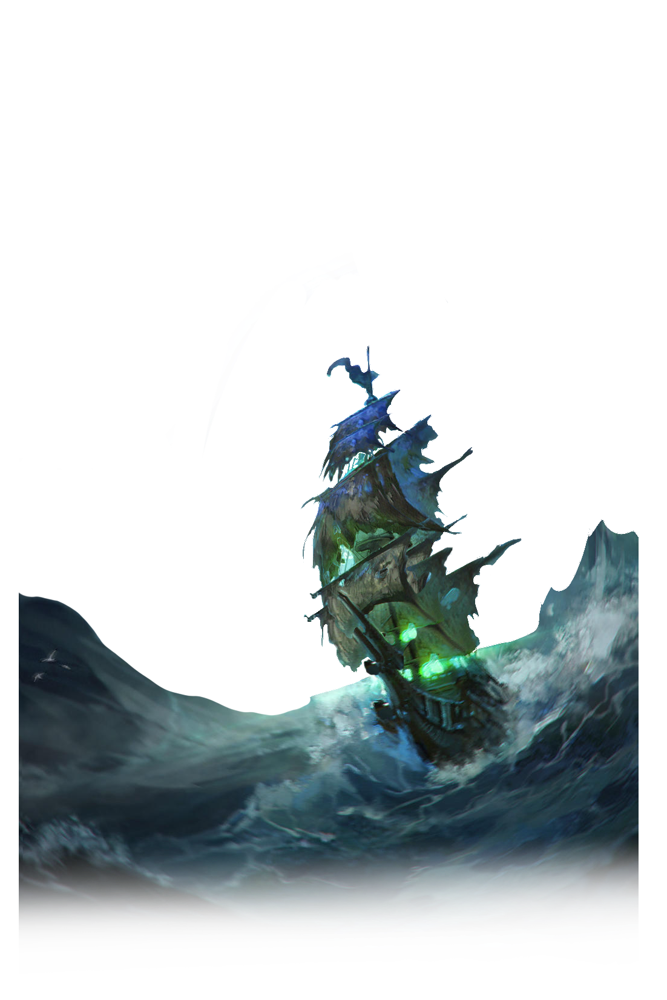

Les Mythes

Le Hollandais Volant
Le hollandais volant est une légende maritime qui aurait navigué les eaux depuis le XVIIe siècle. Selon la légende, le navire était maudit et condamné à errer éternellement sur les océans, sans jamais pouvoir accoster à terre. Le hollandais volant est souvent décrit comme un vaisseau spectral, qui apparaît dans les tempêtes pour effrayer les marins et les faire sombrer. Bien que cette légende soit souvent considérée comme une simple histoire de marins, elle a inspiré de nombreuses œuvres littéraires, artistiques et cinématographiques tout au long des siècles.